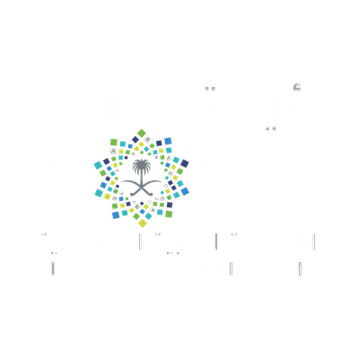

Commercial facilities
Offices, showrooms, retail and service businesses.
Every facility has its own activity, people and risk profile. Daroob works with organizations of different sizes on the safety requirements relevant to their sites.
The company materials describe serving small, medium and large organizations, including commercial and industrial businesses, institutions and embassies. The website specifically highlights food-industry companies and hotels in its fire system work.
Offices, showrooms, retail and service businesses.
Industrial facilities and food-industry companies with site-specific fire and safety needs.
Integrated fire alarm and suppression systems for hospitality environments.
Safety systems and equipment for institutional and diplomatic facilities.
Daroob’s company profile includes a list of completed fire alarm and firefighting projects for 2025–2026. We can share relevant project details and references on request.
Request project references ↗
Saudi Vision 2030 includes the objective of enhancing the safety and security of society. Daroob’s services support that wider direction by helping businesses equip and maintain safer workplaces and facilities.
Saudi Vision 2030 official overview ↗